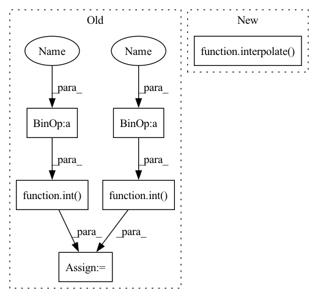

Pattern ID :15044

Before Change
cutn = 64
pieces = []
for ch in range(cutn):
size = torch.randint(int(.5 * width), int(.98 * width), ())
offsetx = torch.randint(0, width - size, ())
offsety = torch.randint(0, width - size, ())
apper = out[:, :, offsetx:offsetx + size, offsety:offsety + size]
apper = torch.nn.functional.interpolate(apper, (224, 224), mode = "bilinear", align_corners = False)
After Change
for _ in range(num_images):
cutout = rand_cutout(out, ratio = (lo, hi))
if exists(downsize):
cutout = interpolate(cutout, downsize)
resized_cutout = interpolate(cutout, 224)
pieces.append(normalize_image(resized_cutout))
image = torch.cat(pieces)
In pattern: SUPERPATTERN
Frequency: 3
Non-data size: 6
Instances
Fragment ID: 50456019
Project Name: lucidrains/deep-daze
Commit Name: 31c2b6b8607914862120163bc48908ad3e6b5c12
Time: 2021-01-17
Author: lucidrains@gmail.com
File Name: deep_daze/deep_daze.py
M Class Name: DeepDaze
N Class Name: DeepDaze
M Method Name: forward(3)
N Method Name: forward(3)
M Parent Class: nn.Module
N Parent Class: nn.Module
M File Name: deep_daze/deep_daze.py
N File Name: deep_daze/deep_daze.py
M Start Line: 67
M End Line: 83
N Start Line: 96
N End Line: 113
'>
Before Change
assert len(img.shape) == 3, "image shape expected 3 but found: {}".format(len(img.shape))
h, w = img.shape[:2]
sf = self.max_dim / max(h, w)
nh = int(sf*h)
nw = int(sf*w)
nimg = np.array(Image.fromarray(img).resize((nw, nh)), dtype=img.dtype)
if "target_boxes" in targets:
targets["target_boxes"] *= sf
After Change
def __call__(self, img: np.ndarray, targets: Dict = {}) -> Tuple[np.ndarray, Dict]:
assert len(img.shape) == 3, "image shape expected 3 but found: {}".format(len(img.shape))
nimg, targets = interpolate(img, self.target_size, targets=targets)
return (nimg, targets)
class ConditionalInterpolate():
'>
Fragment ID: 50456021
Project Name: borhanmorphy/fastface
Commit Name: c5da7ce5325ff194e2b96a81245e3834e7bd2c29
Time: 2021-05-09
Author: borhano.f.42@gmail.com
File Name: fastface/transforms/interpolate.py
M Class Name: Interpolate
N Class Name: Interpolate
M Method Name: __call__(3)
N Method Name: __call__(3)
M Parent Class:
N Parent Class:
M File Name: fastface/transforms/interpolate.py
N File Name: fastface/transforms/interpolate.py
M Start Line: 14
M End Line: 26
N Start Line: 30
N End Line: 30
'>
Before Change
).cuda()
def forward(self, text, return_loss = True):
width = self.image_width
out = self.model()
if not return_loss:
return out
cutn = 64
pieces = []
for ch in range(cutn):
size = torch.randint(int(.5 * width), int(.98 * width), ())
offsetx = torch.randint(0, width - size, ())
offsety = torch.randint(0, width - size, ())
apper = out[:, :, offsetx:offsetx + size, offsety:offsety + size]
apper = torch.nn.functional.interpolate(apper, (224, 224), mode = "bilinear", align_corners = False)
After Change
for _ in range(num_images):
cutout = rand_cutout(out, ratio = (lo, hi))
if exists(downsize):
cutout = interpolate(cutout, downsize)
resized_cutout = interpolate(cutout, 224)
pieces.append(normalize_image(resized_cutout))
image = torch.cat(pieces)
'>
Fragment ID: 50456025
Project Name: lucidrains/deep-daze
Commit Name: 31c2b6b8607914862120163bc48908ad3e6b5c12
Time: 2021-01-17
Author: lucidrains@gmail.com
File Name: deep_daze/deep_daze.py
M Class Name: DeepDaze
N Class Name: DeepDaze
M Method Name: forward(3)
N Method Name: forward(3)
M Parent Class: nn.Module
N Parent Class: nn.Module
M File Name: deep_daze/deep_daze.py
N File Name: deep_daze/deep_daze.py
M Start Line: 67
M End Line: 83
N Start Line: 96
N End Line: 113